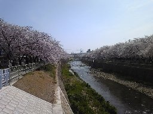
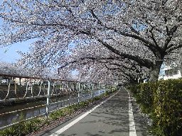
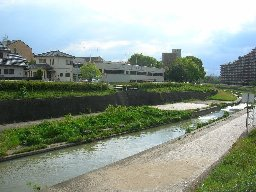

香流川 (名東区の川)


香流は「かなれ」と読む。
香流川は千種区で矢田川に合流する。
川筋は細かな蛇行をしながら名東区のほぼ北端を横切るように流れ、東部では守山区との境界になっている。
人と自転車の専用道が川沿いに整備され、散歩やジョギングをする地元の人でいつも賑っている。
川には鯉や亀や鴨をいつも見ることができ、身近に生き物を見ながら自然散策が気軽にできるよい道である。
小さな人道橋も多くかかっており、川沿いに散歩している時に気が向いたときにすぐに反対岸に渡って引き返すことができて非常にありがたい。

あまり有名ではないが、名東区の香流川は桜並木が非常に立派である。
桜の季節になると提灯がつけられ花見気分を盛り上げてくれる。
また人工ではあるが川原に下りることができ、川原の散歩ができる。
花見の時期は川原でバーベキューをしているグループも見られる。
この辺りの地域名は香流、香南、香坂と香流川にちなんだ地名が多い。
また、川の南に香流小学校が北に香流中学校がある。
香流小学校は名東区で一番最初に立てられた古い学校である。

上写真は名東区の東のはずれで手前の北岸は守山区である。
この辺りはホテルやプールや総合ショッピングセンター清水屋もあり、いつも賑っている。
ここを過ぎると守山区と長久手町の境を流れ、更に上流は長久手町内を流れ、最上流は愛・地球博記念公園になる。
メニュー